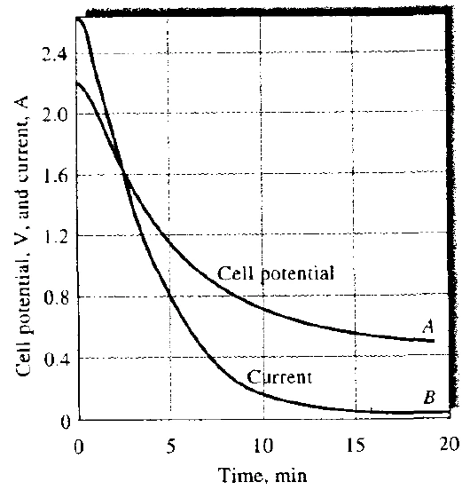
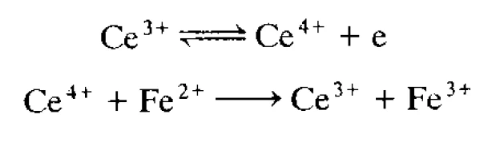

CHAPTER 13 · COULOMETRY & CONTROLLED ELECTROLYSIS
库仑法与控制电位电解
按课件顺序整理原理、公式条件、复算例题与易混概念。
13.1 · FARADAY LAW
把电荷换成物质的量
库仑法（coulometry）测量电解所消耗的总电荷，用电子计量关系求待测物的绝对量。它与只消耗很少分析物的伏安法相比，通常追求定量转化；与电重量法相比，库仑法读取电荷，电重量法称量电极上增加的沉积物质量。
nX=QnF； mX=MQnF
Q 用 C，电流用 A，时间用 s，F≈96485 C·mol−1，M 为摩尔质量，n 为每摩尔待测物对应的电子摩尔数，nX 才是待测物的物质的量。课件使用 96487，通常只是常数取值与舍入差异。A·s 等于 C；mA 与分钟必须先换算。
例：Cu2+＋2e−→Cu，10.00 mA 电解 100.0 s，通过 1.000 C；若定量沉积，m=63.546×1.000 与 2F 的比值，约为 0.3293 mg。先配平半反应，才能确定式中的 n。
来源：13_Coulometry.pptx，slide 2–4。
13.2 · CURRENT EFFICIENCY
电流效率：计量成立的条件
基础 Faraday 换算默认电荷全部用于目标反应。若同时析氢、析氧、还原杂质，或有其他电化学过程分走电荷，电流计读到的总量就不再全部对应分析物。把目标反应所占电荷比例记为 ε：
库仑分析追求约 100% 的目标电流效率，也要保证待测物实际转化完全。二者分别回答“电荷有没有用错地方”和“待测物有没有遗漏”。若效率仅为 98%，却把全部 Q 用来计算并且反应已完成，结果将约高出 2.04%。
电容充电电流、残余电流和溶液杂质同样可能影响积分。实验设计应包含空白测定、稳定基线与适当终点判据；时间越长，较小的持续背景也可能积累成可观电荷。
对同一份样品，理想库仑总量只取决于转化的物质的量和电子数，增大电极面积或加强搅拌主要改变完成分析所需的时间。若这些条件改变后总积分明显不同，应检查背景、副反应或未反应完全。这个判断把速率控制与最终计量分开，也可用来检查装置与积分器是否工作稳定。
来源：13_Coulometry.pptx，slide 3、12。
13.3 · POTENTIAL & POLARIZATION
分解电压、超电位与极化
电解池的实际外加电压，既要克服按指定方向电解的可逆电位差，还要补偿电极过电位和溶液欧姆降。采用两端所需电压及过电位的正值大小表示：
若采用带符号的还原电位和过电位，则应按阳极减阴极统一推导，不能从不同符号体系中拼接。析出电位针对某电极反应，分解电压针对整个电解池；浓度降低还会通过 Nernst 关系改变平衡电位。
浓差极化源于界面物种输送不足，增加搅拌、增大面积或降低电流密度可减小它；活化极化源于有限的电子转移速率，材料和表面催化性质会影响它。双电层可储存电荷，是界面结构与瞬态充电的一部分，不能把所有电化学极化都直接等同于双电层。
理想可极化电极在一定范围内主要以充电响应电位变化；理想不可极化电极则可在较小电位变化下交换电流。Ag／AgCl 常用于理解后一极限，实际电极仍有适用范围。
来源：13_Coulometry.pptx，slide 5–11。
13.4 · CONTROLLED-POTENTIAL COULOMETRY
控制电位库仑法：电流随耗尽而下降
恒电位仪把工作电极相对参比的电位维持在选定值，对电极提供相反方向的电流。分析物不断被消耗，主体浓度降低，电流逐渐下降；电流随时间的面积给出总电荷。恒定工作电极电位与恒定整个电池电压是两种不同控制方式，溶液电阻或对电极状态变化时，两者尤其不能混用。
充分搅拌、溶液体积 V 固定、传质层厚度 δ 近似恒定且表面反应物耗尽时，物料衡算为 Vdcdt=−ADcδ。积分得到主体浓度指数衰减：
Q(t)=nFVc0(1−e−kt)
A 是电极面积，D 是扩散系数，k 的单位为 s−1。课件写 c=c010−Kt 时，K≈0.434k；以秒或分钟表示时间会改变其数值。达到 99% 转化需 kt≈4.605。实际终点要依据净电流接近背景或剩余量阈值判断。

来源：13_Coulometry.pptx，slide 12–15。
13.5 · PLANAR DIFFUSION & SELECTIVITY
Cottrell 关系与选择性沉积
静止溶液、宏观平面电极在电位阶跃后的早期，可近似半无限线性扩散。此时主体总体浓度尚未明显改变，但扩散层随时间增长：
这才是 Cottrell 方程的 t−12 衰减。它与上一节充分搅拌、整个样品被逐渐耗尽的指数规律对应不同边界条件。判断题先看是否搅拌、扩散几何和电解时间，不能仅凭“控制电位”选公式。
选择性电解要求：目标物降至规定残余浓度时仍能沉积，干扰物则尚未显著反应。课件中 Cu2+ 从 0.1 降至 10−6 mol·L−1，平衡还原电位约由＋0.31 变为＋0.16 V，均按课件的氢电极标度。需把这一终点所需电位与 Pb2+ 的析出条件比较，并留意过电位、络合和 iR 降。
来源：13_Coulometry.pptx，slide 16–18。
13.6 · COULOMETRIC TITRATION
恒流库仑滴定与电生试剂
恒流法使 Q=It，直接测量更简单，但分析物逐渐减少时，电极电位可能不断漂移并引发副反应。库仑滴定可利用大量前体在电极上生成滴定剂，使它立即、快速、定量地与待测物反应；由电位法等方法指示终点。它用电荷计量替代标准滴定液的体积计量。
课件以 Fe2+ 氧化为例：溶液中加入过量 Ce3+，阳极使 Ce3+→Ce4+＋e−，随后 Ce4+＋Fe2+→Ce3+＋Fe3+。铈循环传递氧化当量，净计量仍是每摩尔 Fe2+ 对应一摩尔电子。
电生试剂还可用于酸碱、沉淀和络合滴定，例如电生 Ag+ 与卤离子反应。若每摩尔滴定剂需 ng 摩尔电子，而每摩尔分析物消耗 r 摩尔滴定剂，则 nX=It 与 rngF 的比值。前体浓度、电解效率、化学反应速率、对电极产物隔离和终点延迟都需要控制。

来源：13_Coulometry.pptx，slide 21–24。
13.7 · CHARGE MEASUREMENT & EXAMPLES
积分、终点与复算
电荷可通过电子积分读取，也可用银沉积称量或气体库仑计间接测定。水电解气体库仑计中，每 4 mol 电子对应 2 mol H2 与 1 mol O2，所以收集气体总量为 3Q 与 4F 的比值。若近似理想气体：
课件的约 0.1741 mL／C 对应接近 273.15 K、1 atm 的气体体积；室温时数值会变化，湿气体还需考虑水蒸气分压。银库仑计则由 Ag+＋e−→Ag 使用一电子计量。
恒流滴定例：20.00 mA、120.0 s 生成的 Ce4+ 恰好反应完 Fe2+，扣空白后 Q=2.400 C，n(Fe2+)=2.487×10−5 mol，对应铁约 1.389 mg。若有空白耗时，应先用 I(tsample−tblank) 求净电荷。
控制电位法为什么仍需看电流终点？
电位选择反应，电流反映剩余可反应物与背景。固定电位后，还要积分到适当完成度，并扣除不属于分析物的电荷。
不配标准液是否意味着不需要校准？
仍需核验电流、时间或积分器，以及反应效率、计量关系和终点。省去标准滴定液并未省去测量验证。
来源：13_Coulometry.pptx，slide 19–24；综合复习。